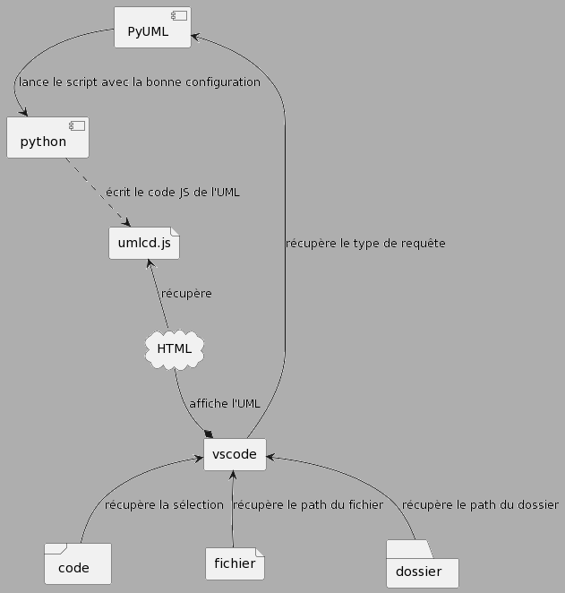

L'extension a été créé afin d'améliorer certains points problématiques qui étaient présents sur notre IDE. En effet, en plus d'une interface plus optimisée, l'extension est disponible partout, sur l'IDE VSCode (une IDE très populaire dans le domaine du développement). On gagne en rapidité d'exécution, notamment afin un click (voir un raccourci), votre code orienté objet, en Java et en Python, est généré en UML Diagram Class permettant un visuel simple, interactif et coloré.
Nous allons observer le fonctionnement de l'extension au niveau de VSCode. L'intégralité du code est stockée dans le fichier [extension.js] L'image suivante nous montre le fonctionnement global de l'extension.
L'extension est basée sur deux fichiers impératifs à son fonctionnement :
Elle est rejoint par le [main.py] qui permet de gérer le fonctionnement de l'extension car il est situé entre la réception du code et/ou des paths des fichiers et la génération de l'UML dans "umlcd.js".
Notre "extension.js" est séparé en différents groupes de fonctions: